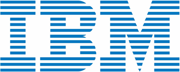

About FOR3NSIQ
FOR3NSIQ is the Production Phase of TriCipta AI, PETRONAS Carigali's AI delivery arm for Upstream, built through a strategic partnership with IBM Malaysia and Tridiagonal.ai. Meet the partners and the team behind it.



Partners
PETRONAS · AI partner · Domain partner
The three organisations behind FOR3NSIQ, and what each contributes.
-
PETRONAS
PETRONAS Carigali
Asset owner & primary beneficiary
Gives production & maintenance data, business workflows, and investment to co-develop.
Read moreRead less
Gets competitive edge through bespoke AI, product exclusivity, and IP: 100% PETRONAS-owned for in-house work, shared IP for co-developed AI.
-
AI partner
IBM Malaysia
AI Technology for Lean Workforce & AI-Driven Operations
Leads AI/ML algorithm development, digital infrastructure design, and end-to-end product adoption.
Read moreRead less
Brings agentic AI, digital twins, scalable cloud/on-prem architecture, real-time optimisation, and Integrated Activity Planning (IAP) workflow transformation.
-
Domain partner
Tridiagonal.ai
Domain Engineering for Production, Reliability & Maintenance
Provides operational credibility and production/asset-management domain strength.
Read moreRead less
Contributes Integrated Surface Equipment Modelling and Advanced Time-Series Analytics & Anomaly Detection: the engineering logic that validates every model.
Organisation structure
The team behind FOR3NSIQ
A project lead and a workstream lead, with six project teams under them.
-
Project Lead
Ina Czarina BT Arief Tham
-
Workstream Lead
Aaron Subash George
-
Project 2A
AI-Driven SAP Master Data Revitalisation
Leads
M Azrul Adha B M Sohaimi
Nurul Aini Bt M Faudzi
-
Projects 2B & 3A
Vision Analytics / AI-Driven Asset Integrity
Lead
Seng Leng Heng
-
Project 4A
AI-Driven Maintenance & Reliability
Lead
Belal Magdy Fathalla
-
Project 6A
AI-Driven Production Optimisation & Planning
Lead
Dahnaraj Lachemykanden
-
Project 7 & TA
Work Process Efficiency Improvement / Turnaround
Lead
M Azrul Adha B M Sohaimi
-
Project CDF
Contextual Data Fusion
Lead
Gan Denson
-
-


![Diagram. Left: equipment-centric monitoring, where equipment data is monitored, analysed manually in isolation and recommendations go out by email. Right: FOR3NSIQ system-wide reliability intelligence, combining multiple data sources (PI, SAP, EBC, CBM) with AI across instrumentation, rotating equipment, electrical, static and process systems, using multivariate anomaly detection, AI-assisted RCA and system-wide correlation. Outcomes: earlier detection, faster diagnosis and decision, higher action closure and accountability, and lower unplanned deferment.](assets/img/p4a-system-intelligence.jpg)